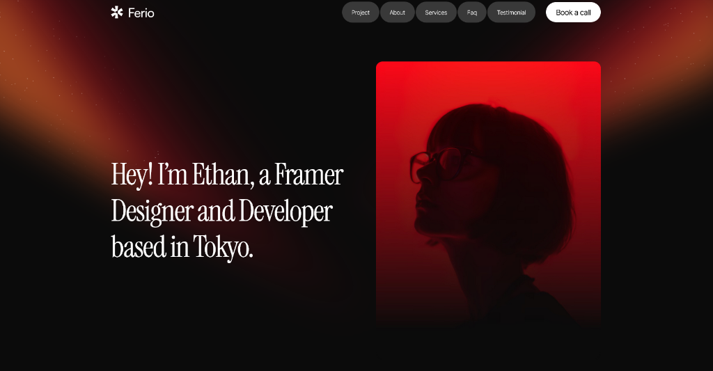
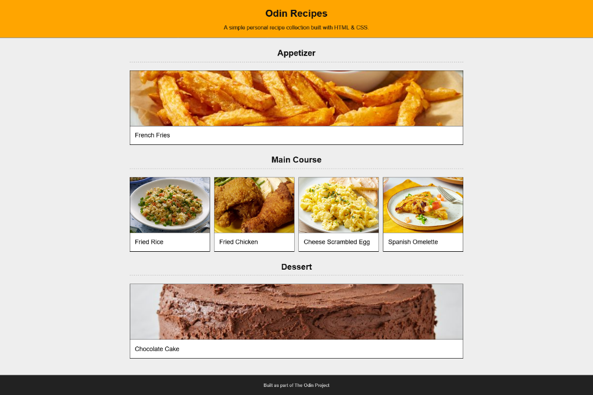
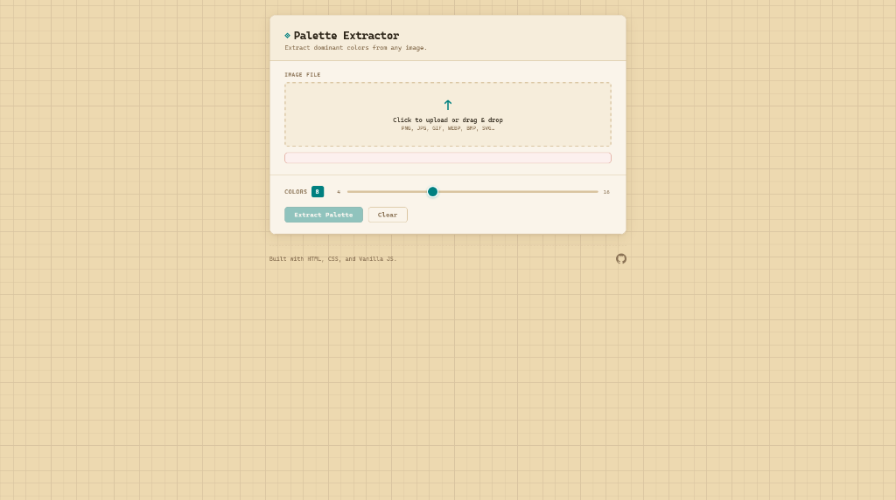

Hey! I'm Gielang,
a Student Developer & Builder based in
Surabaya.
Passionate about problem solving and continuous learning through C, Python, and web development projects.
See My Work
About Me
M. Gielang Fitrawan Mukhlish
Student Developer & Builder
Location
Surabaya, Indonesia
Education
SMAN 2 Surabaya (Graduated 2025)
As a 2025 graduate from SMAN 2 Surabaya, I am building a strong foundation in programming through C, Python, and web development projects. I am passionate about continuous learning and preparing myself for future academic and professional opportunities.
Skills
Programming
- C
- HTML/CSS
- JavaScript (Vanilla)
- Python
Tools
- Git & GitHub
- VS Code
Core Strengths
- Strong Programming Fundamentals
- Responsive Design
- Problem Solving & Debugging
Selected Projects


Frequently Asked Questions
My main focus areas are C programming, Python fundamentals, and front-end web development using HTML, CSS, and vanilla JavaScript. I’m currently strengthening my core programming foundations while building practical projects.
I chose to build this portfolio using core web technologies to strengthen my understanding of fundamentals. Instead of relying on frameworks, I wanted to fully understand structure, styling, and interactivity at a deeper level.
I am currently deepening my understanding of Python and problem-solving, while continuing to practice C programming and web development. My goal is to build strong fundamentals before moving into more advanced technologies.
My goal is to pursue higher education in computer science and continue developing my technical skills. I aim to grow into a capable software developer by building strong fundamentals and gaining real-world experience.
I am based in Surabaya, Indonesia.